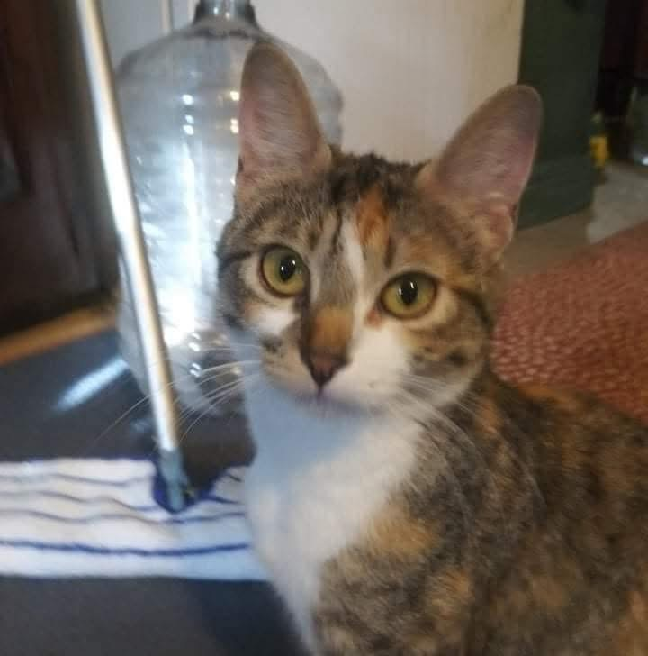
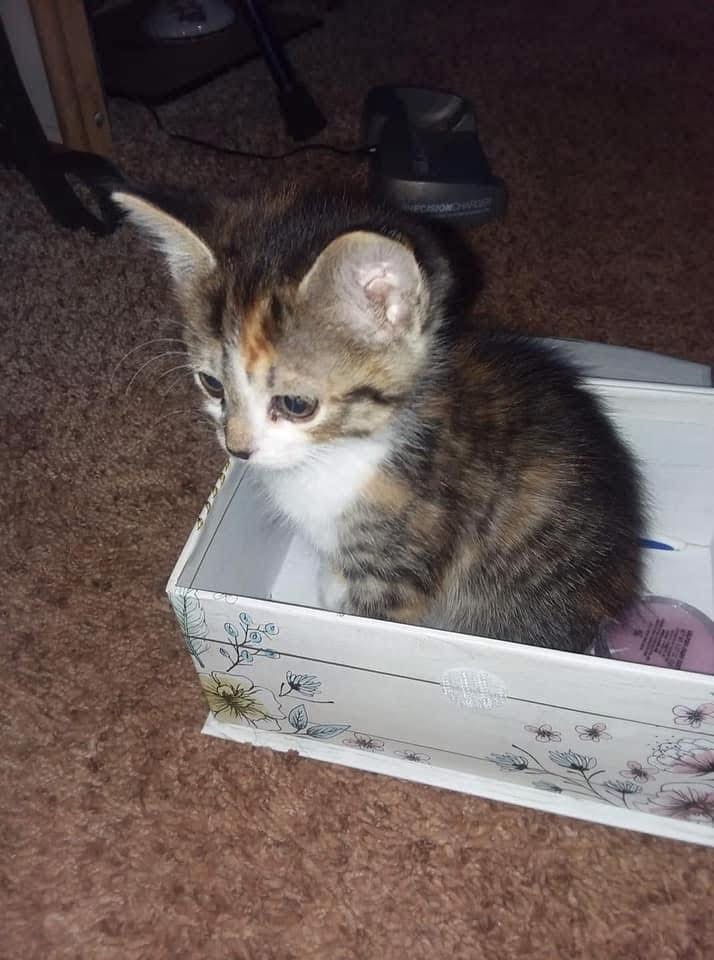
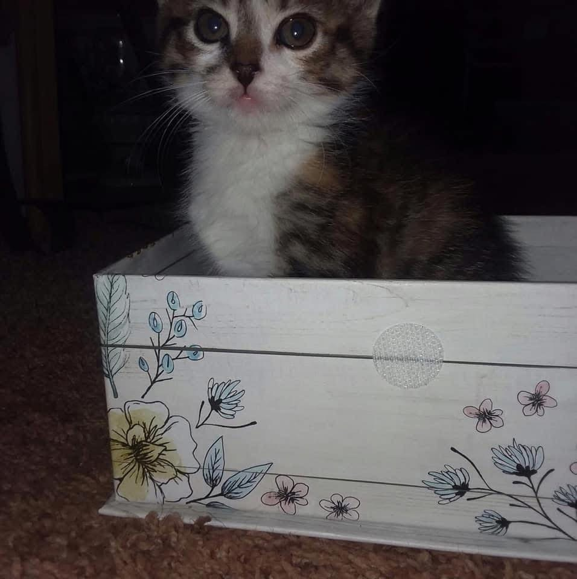

"A cat's love whispers softly but echoes forever."
Welcome to Callie's Corner, a space to cherish the beautiful memories of Callie, the cat who filled my life with endless love and happiness.
Callie's Photo Gallery
A glimpse into Callie's life through her most cherished moments:

Callie's best photo

Callie inside a box looking out

Callie's youngest photo